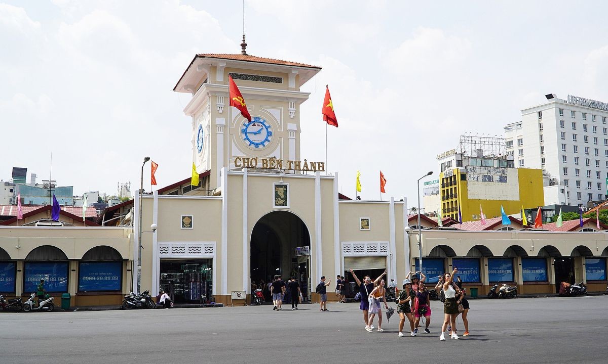
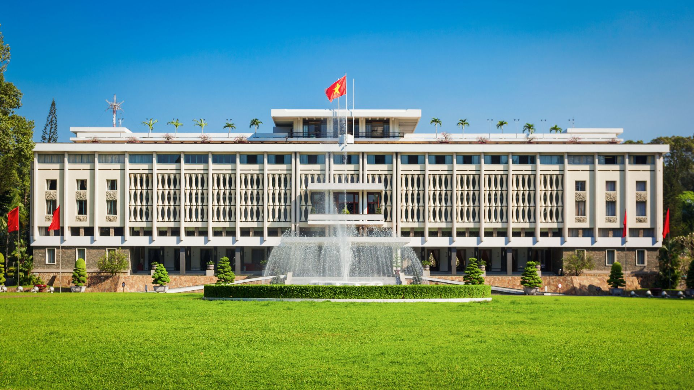
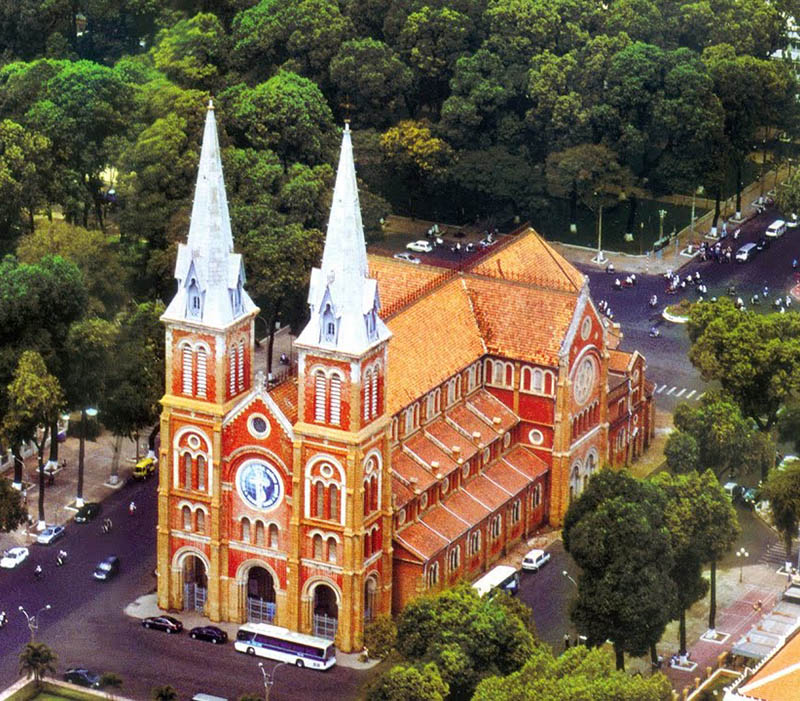
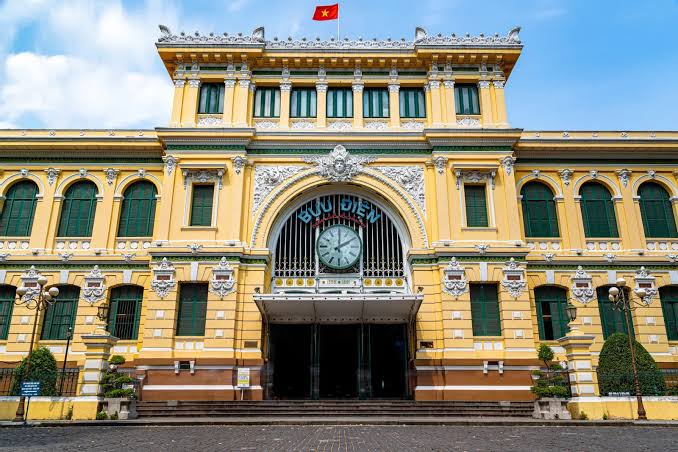
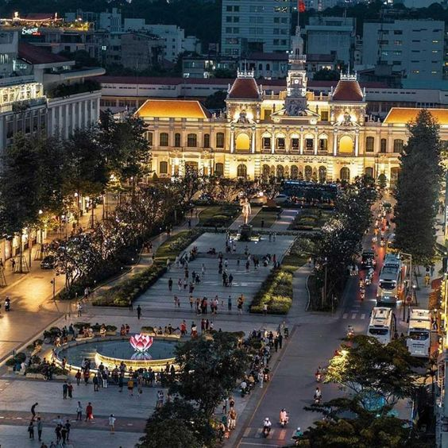
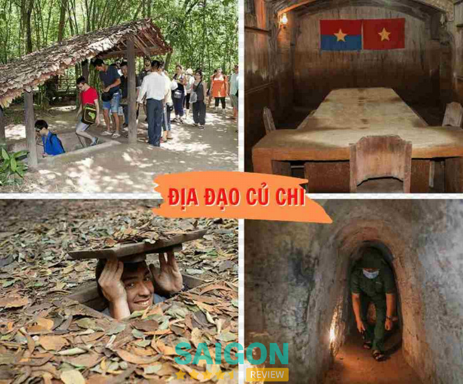
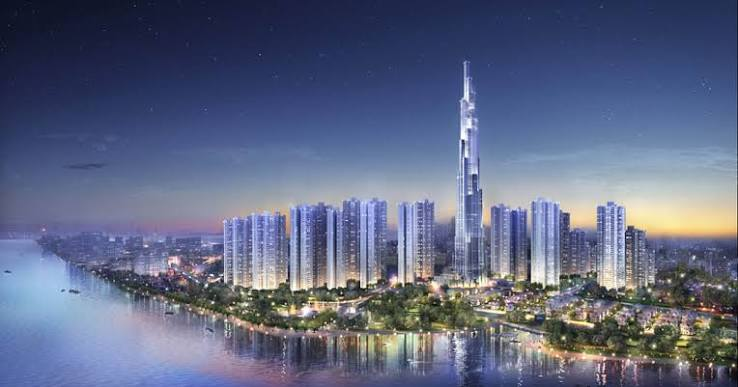
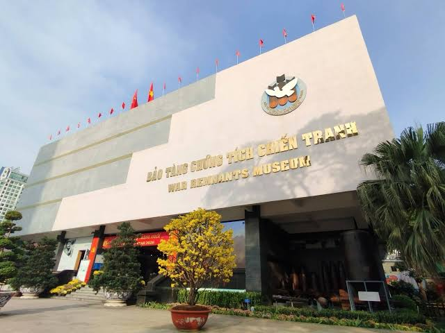
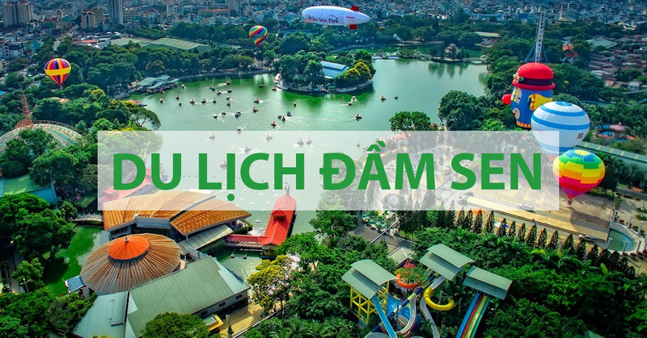

1. Chợ Bến Thành
Chợ Bến Thành là biểu tượng nổi tiếng của Thành phố Hồ Chí Minh. Du khách có thể mua sắm quà lưu niệm, khám phá văn hóa địa phương và thưởng thức nhiều món ăn truyền thống hấp dẫn.
Thành phố năng động - Điểm đến hấp dẫn
Thành phố Hồ Chí Minh là một trong những trung tâm kinh tế, văn hóa và du lịch lớn nhất Việt Nam. Nơi đây nổi tiếng với những công trình kiến trúc lịch sử, các khu vui chơi hiện đại và nền ẩm thực phong phú.
Hãy cùng khám phá những địa điểm du lịch nổi bật và trải nghiệm vẻ đẹp độc đáo của thành phố.

Chợ Bến Thành là biểu tượng nổi tiếng của Thành phố Hồ Chí Minh. Du khách có thể mua sắm quà lưu niệm, khám phá văn hóa địa phương và thưởng thức nhiều món ăn truyền thống hấp dẫn.

Dinh Độc Lập là di tích lịch sử quan trọng, gắn liền với sự kiện ngày 30 tháng 4 năm 1975. Đây là nơi du khách có thể tìm hiểu về lịch sử Việt Nam và chiêm ngưỡng kiến trúc độc đáo.

Nhà thờ Đức Bà là công trình kiến trúc nổi bật mang phong cách châu Âu. Với những bức tường gạch đỏ và hai tháp chuông cao, nơi đây là địa điểm tham quan và chụp ảnh được yêu thích.

Bưu điện Trung tâm Sài Gòn nổi tiếng với kiến trúc cổ kính, mái vòm cao và không gian rộng lớn. Du khách có thể tham quan, chụp ảnh và gửi những tấm bưu thiếp đến người thân.

Phố đi bộ Nguyễn Huệ là địa điểm vui chơi sôi động tại trung tâm thành phố. Vào buổi tối, nơi đây thu hút đông đảo người dân và du khách đến đi dạo, chụp ảnh và thưởng thức các hoạt động nghệ thuật đường phố.

Địa đạo Củ Chi là di tích lịch sử nổi tiếng, thể hiện tinh thần kiên cường của nhân dân Việt Nam. Du khách có thể khám phá hệ thống đường hầm và tìm hiểu về cuộc sống trong thời kỳ chiến tranh.

Landmark 81 là một trong những tòa nhà cao nhất Việt Nam, với chiều cao 461,2 mét. Nơi đây có trung tâm mua sắm, nhà hàng và đài quan sát giúp du khách ngắm nhìn toàn cảnh thành phố từ trên cao.

Bảo tàng Chứng tích Chiến tranh trưng bày nhiều hình ảnh, tài liệu và hiện vật lịch sử. Đây là địa điểm giúp du khách hiểu thêm về lịch sử Việt Nam và giá trị của hòa bình.

Công viên văn hóa Đầm Sen là địa điểm vui chơi giải trí quen thuộc tại TP.HCM. Với cảnh quan xanh mát và nhiều hoạt động hấp dẫn, đây là lựa chọn phù hợp cho gia đình và bạn bè vào dịp cuối tuần.